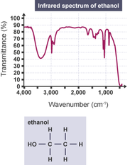

Số sóng

Image source: Topic 1 image sources
| Vietnamese | Số sóng |
|---|---|
| English | Wavenumber |
| Pronunciation | /ˈweɪv nʌmbər/ |
| Word type | Noun |
Meaning (Vietnamese)
Đơn vị tần số được sử dụng trong phổ hồng ngoại, biểu thị số lượng sóng trên một đơn vị khoảng cách (thường được tính bằng nghịch đảo của xentimét, cm⁻¹).
Meaning (English)
A unit of frequency used in infrared spectroscopy, representing the number of waves per unit distance (commonly expressed in reciprocal centimeters, cm⁻¹).
Example
The characteristic absorption peak for the carbonyl group usually appears at a wavenumber of around 1700 cm⁻¹.
Đỉnh hấp thụ đặc trưng cho nhóm carbonyl thường xuất hiện ở số sóng khoảng 1700 cm⁻¹.
Another definition from the notes
Đơn vị tần số được sử dụng trong phổ hồng ngoại, biểu thị số lượng sóng trên một đơn vị khoảng cách
A unit of frequency used in infrared spectroscopy, representing the number of waves per unit distance.
Source of information: IUPAC Gold Book & Royal Society of Chemistry (RSC) Education.; Sách giáo khoa Hóa học 11; Topic 1 notes (see Sources)